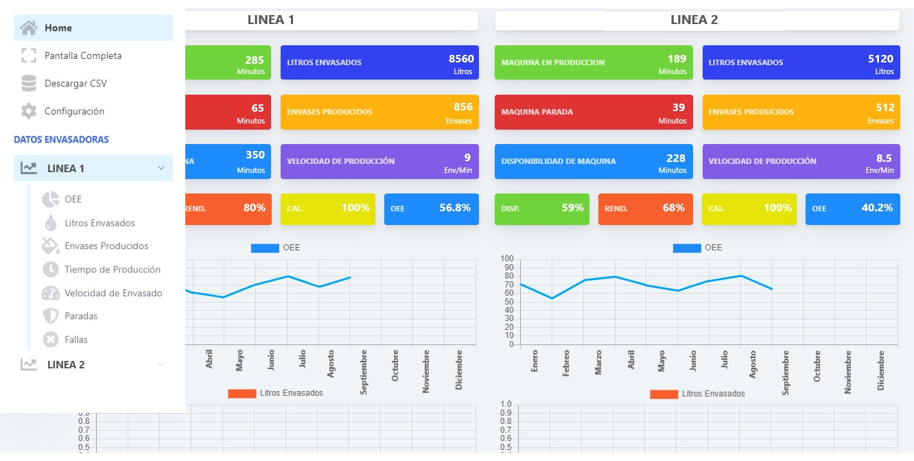

Mediante el registro y extracción de datos de las máquinas y equipos hemos desarrollado un sistema avanzado para la medición de la Eficiencia General de Equipos (OEE), una métrica ampliamente adoptada en la industria actualmente.
Este sistema se ha diseñado con el objetivo de potenciar la mejora continua y la productividad en entornos industriales. La herramienta proporciona una visión detallada de los puntos débiles en la producción, permitiendo a las empresas identificar áreas de oportunidad y tomar decisiones informadas para optimizar el rendimiento de sus equipos. Con nuestro enfoque innovador, las organizaciones pueden aprovechar al máximo sus recursos y mejorar significativamente la eficacia operativa en busca de la excelencia en la producción.

Eficiencia General de Equipos (OEE):
Es una métrica crucial en la gestión de la producción que se ha convertido en una herramienta fundamental para las industrias que buscan maximizar su rendimiento. El OEE mide la eficiencia de un proceso de producción al evaluar la disponibilidad, rendimiento y calidad de los equipos. Aquí hay un desglose de sus componentes clave:
1. Disponibilidad (Availability): Mide el tiempo que los equipos están realmente disponibles para la producción. Se calcula dividiendo el tiempo de operación real entre el tiempo total disponible.
2. Rendimiento (Performance): Evalúa la velocidad real de producción en comparación con la velocidad teórica máxima. Se calcula dividiendo la velocidad real entre la velocidad teórica.
3. Calidad (Quality): Refleja la proporción de productos buenos producidos en relación con el total de productos producidos. Se calcula dividiendo la cantidad de productos buenos entre la cantidad total de productos.
Aplicaciones Prácticas del OEE:
- Identificación de Ineficiencias: El OEE permite a las empresas identificar áreas específicas de ineficiencia en el proceso de producción. Ya sea por tiempos de inactividad no planificados, velocidad de producción subóptima o problemas de calidad, el OEE proporciona información detallada sobre los puntos débiles.
- Toma de Decisiones Informada: Al conocer las áreas de oportunidad, las empresas pueden tomar decisiones informadas para mejorar la eficiencia. Esto podría implicar la implementación de mantenimiento preventivo, la optimización de la velocidad de producción o la introducción de mejoras en la calidad.
- Maximización de Recursos: El OEE ayuda a las organizaciones a maximizar el uso de sus recursos al garantizar que los equipos estén operando a su capacidad máxima y produciendo productos de alta calidad.
Ventajas Competitivas:
- Mejora Continua: Al adoptar el OEE como una herramienta integral, las empresas fomentan una cultura de mejora continua. Esto les permite mantenerse ágiles y adaptarse a las cambiantes demandas del mercado
- Reducción de Costos: Al identificar y abordar ineficiencias, las organizaciones pueden reducir costos asociados con el tiempo de inactividad no planificado, retrabajos y desperdicios de materiales.
- Calidad Consistente: La atención a la calidad mediante el monitoreo constante del OEE conduce a una producción más consistente y productos finales de alta calidad, fortaleciendo la reputación de la marca.
En resumen, la implementación efectiva del OEE no solo mejora la eficiencia operativa, sino que también posiciona a las empresas en una trayectoria sostenible hacia el éxito empresarial a través de la optimización continua y la maximización de recursos.